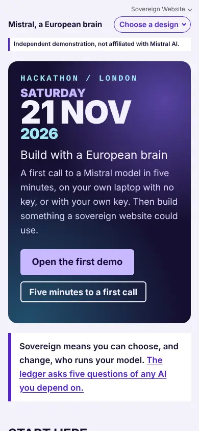
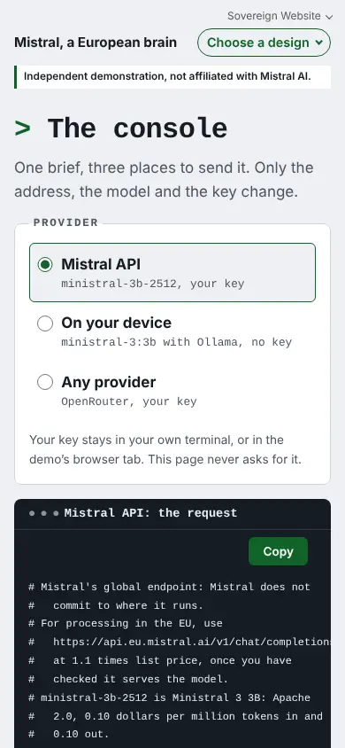
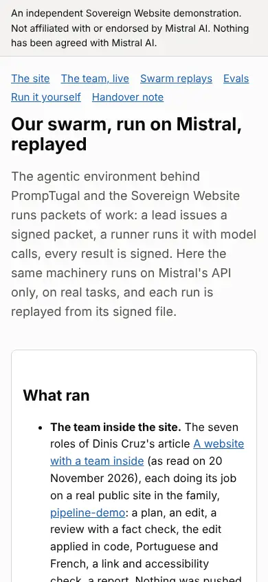

Synthetic users: Mistral provider site, round 3
Site: https://mistral.provider.sovereignweb.site at a17c9c7 (v0.1.13). The run covered the home page (design 5, the hackathon poster), designs 1 to 4, /swarm/ and /evals/. Run: 21 November 2026, about 00:15 UTC, by design.b.rounds. Look score: 3.4 (4, 4, 3, 3, 3), up from 3.0 in round 1. Best design votes: 5, 3, 4, 2, 4. The review.
Method: Synthetic users. One agent played all five personas in its own folder. These are simulations, and never replace the measured checks or a real person.
| Persona | Look | Best | Said |
|---|---|---|---|
| Phone visitor | 4 | 5 | "Nearly a 'wow'"; wants the venue, time and a join button in the poster. |
| Hackathon developer | 4 | 3 | "A small 'wow' for the console"; trusted the real call log ("1431 ms, measured in the browser"). |
| Low-vision reader | 3 | 4 | The swarm page repeats one link text; footnotes come loose on design 2. |
| Design critic | 3 | 2 | "Five front pages on one template" below the hero; the swarm page "breaks the system". |
| Small business owner | 3 | 4 | The ledger's "Not sure" options help; wants "what this means for your business". |
Agreed by three or more
- Phone pages "overflow": code looks cut off and tables scroll sideways. The code does scroll inside a labelled, focusable box (checked); a still screenshot cannot show that, but a visitor may not know to scroll either.
- Small grey text and loose footnote numbers.
- The swarm page is a repetitive wall, in a different style from the rest.
- Honesty and dated sources earn trust (four).
- The poster is the strongest first impression, but it has no practical event details.


